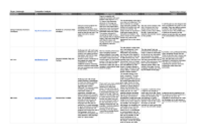

User Research
This page contains a summary of my findings and information I gathered as a part of the research component of my portfolio project. As a part of the project, I conducted user research and testing through various methods introduced in my course. Each section contains a description or summaries of how conducted each process and the benfit of each to my project. For further information on each topic, you can click the images in each section to go see their cooresponding documents.
User Interviews
Asking questions and communicating with peers and potential users is an important part of understanding user expectations and the content to provide in your website. In my case, I interviewed other students and participants that fell into the role of potential users. I focused on asking questions that helped to understand each particpant and their opinions on different aspects of a personal portfolio. The questions helped to gather information about the participants and their aspirations, and then led into specific information about their personal expectations when viewing a portfolio.
Click image to view interview documents.
Competitor Analysis
Studying and analyzing competing websites can reveal faults in your own website, or emphasize what you have done well contrary to your competitors. Comptetitor analysis documents the content and features of a website while recording personal thoughts about its styling and general weaknesses. An overall anaylsis of the website considers this information and evaluates how successful it is. I evaluated the portfolios of three different software engineers to analyze the strength and weaknesses of a competitor's website. I chose these three sites because they have very different styling and the tone of how the content is presented varies wildly between them. By selecting websites with significant differences it helped me understand the variety of portfolios and improve my own.
Click image to view competitor analysis document.
Featue Value Matrix
Determining what features to include in your website is always a concern when considering trade-offs between the time to implement such featuers, and the value gain by including it. One of the tools available for easing this process is a value matrix of features and characteristics in which can map scores and evaluations to. The features I selected to evaluate take into consideration the feedback I received from the first iteration of my website and what I learned during my user interviews. Focusing on extending accessibility on mobile, addition of content and improving styling I evaluated a selection of five different features in my matrix.
Click image to view feature matrix document.
Feature Prioritization
The addtional features I considered for my evaluations were then prioritized by how highly I valued their implementation at the cost of technical complication or time. Prioritizing features can help to aid in development time and adding what matters first for an interface. For my research, I prioritized the features using two different models: first a linear priority model and secondly one with axis of technical effort vs. business/user value.
Click image to view feature prioritization document.